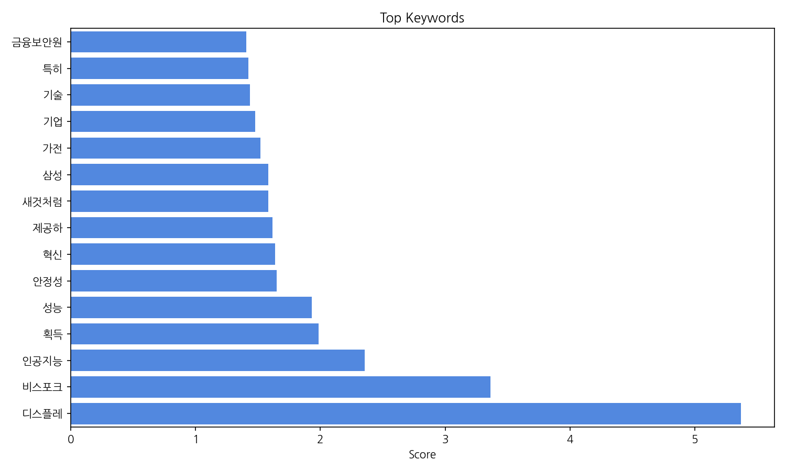
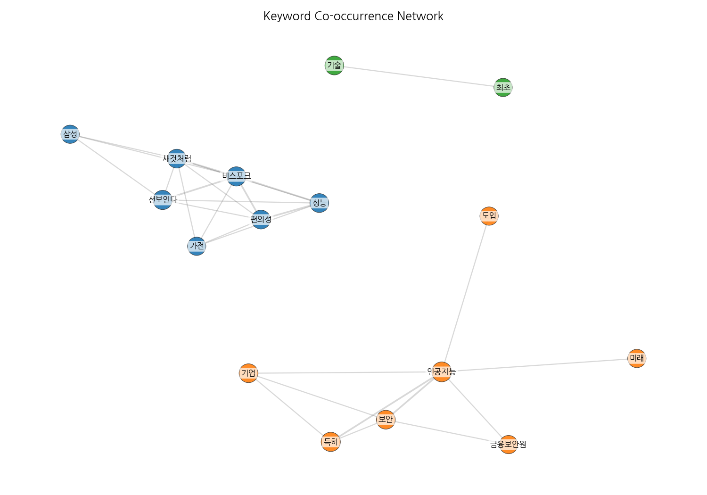
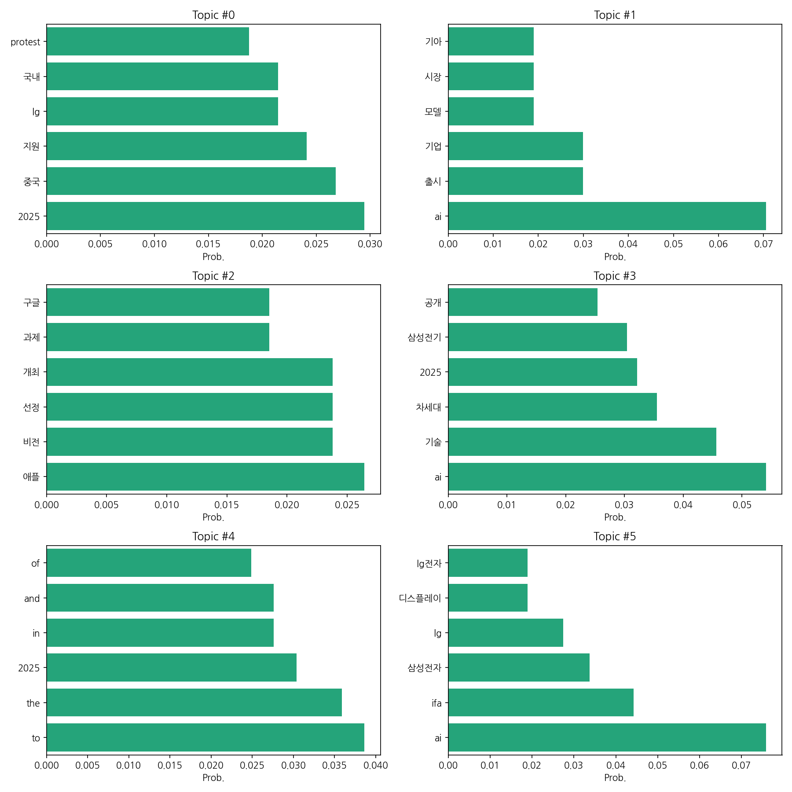

이번 기간 핵심 토픽과 키워드, 주요 시사점을 요약합니다.
핵심 맥락 설명: 데이터는 크게 세 가지 주제로 묶을 수 있습니다. 첫째, 2025년을 중심으로 한 국내외 기업들의 경쟁 및 기술 개발 동향 (topic 0, 3, 4)입니다. LG, 중국 기업과의 경쟁, 차세대 기술(AI, 반도체) 개발 등이 주요 내용입니다. 둘째, AI 기술의 발전과 시장 확대 및 기업들의 AI 전략 (topic 1, 3)입니다. AI 모델 출시, 인재 확보, AI 기술 기반의 신제품 개발 등이 언급됩니다. 셋째, 애플, 구글 등 글로벌 기업들의 기술 경쟁 및 행보 (topic 2)입니다. 신기술 발표, 대회 개최 등을 통해 기술 경쟁력 강화에 힘쓰는 모습을 보여줍니다. 전반적으로 2025년을 기점으로 기술 경쟁이 심화되고 있음을 보여주는 데이터입니다.
최근 변화/스파이크: 2025년 9월 3일 기사 수가 급증(415건)한 것을 확인할 수 있습니다. 이는 특정 이벤트 또는 뉴스 보도로 인한 급격한 관심 증가를 시사하며, 이후 9월 4일에는 다소 감소했으나 여전히 높은 수치(108건)를 유지하고 있습니다.
실무 인사이트:
| Rank | Keyword | Score |
|---|---|---|
| 1 | 디스플레 | 5.365 |
| 2 | 비스포크 | 3.363 |
| 3 | 인공지능 | 2.356 |
| 4 | 획득 | 1.987 |
| 5 | 성능 | 1.933 |
| 6 | 안정성 | 1.649 |
| 7 | 혁신 | 1.638 |
| 8 | 제공하 | 1.618 |
| 9 | 새것처럼 | 1.585 |
| 10 | 삼성 | 1.582 |
| 11 | 가전 | 1.522 |
| 12 | 기업 | 1.478 |
| 13 | 기술 | 1.436 |
| 14 | 특히 | 1.425 |
| 15 | 금융보안원 | 1.409 |



핵심 맥락 설명: 데이터는 크게 세 가지 주제로 묶을 수 있습니다. 첫째, 2025년을 중심으로 한 국내외 기업들의 경쟁 및 기술 개발 동향 (topic 0, 3, 4)입니다. LG, 중국 기업과의 경쟁, 차세대 기술(AI, 반도체) 개발 등이 주요 내용입니다. 둘째, AI 기술의 발전과 시장 확대 및 기업들의 AI 전략 (topic 1, 3)입니다. AI 모델 출시, 인재 확보, AI 기술 기반의 신제품 개발 등이 언급됩니다. 셋째, 애플, 구글 등 글로벌 기업들의 기술 경쟁 및 행보 (topic 2)입니다. 신기술 발표, 대회 개최 등을 통해 기술 경쟁력 강화에 힘쓰는 모습을 보여줍니다. 전반적으로 2025년을 기점으로 기술 경쟁이 심화되고 있음을 보여주는 데이터입니다.
최근 변화/스파이크: 2025년 9월 3일 기사 수가 급증(415건)한 것을 확인할 수 있습니다. 이는 특정 이벤트 또는 뉴스 보도로 인한 급격한 관심 증가를 시사하며, 이후 9월 4일에는 다소 감소했으나 여전히 높은 수치(108건)를 유지하고 있습니다.
실무 인사이트:
| Idea | Target | Value Prop | Score |
|---|---|---|---|
| 개인 맞춤형 AI 기반 스마트홈 에너지 관리 솔루션 | 스마트홈 사용자(20-50대), 에너지 절약에 관심 있는 가구, 환경 보호에 대한 인식이 높은 소비자 | AI 기반 개인 맞춤형 에너지 관리 솔루션을 통해 실시간 에너지 소비량 모니터링, 사용 패턴 분석, 에너지 절약 팁 제공, 맞춤형 에너지 절약 목표 설정 등을 제공합니다. 경쟁 솔루션 대비 개인화된 분석 및 맞춤형 솔루션 제공을 통해 에너지 절약 효율을 극대화하고 사용자 편의성을 높입니다. | 3.8 |
| AI 기반 맞춤형 금융 상품 추천 플랫폼 | 20-40대 직장인, 금융 상품 선택에 어려움을 느끼는 소비자, 자산 관리에 관심 있는 개인 | AI 기반의 정교한 알고리즘을 통해 개인의 금융 상황, 목표, 위험 감수 수준 등을 정확하게 분석하여 최적의 금융 상품을 추천합니다. 소비자의 금융 지식 수준에 맞춘 설명과 시각화된 정보 제공으로 이해도를 높이고, 투명하고 신뢰할 수 있는 추천 서비스를 제공합니다. 금융 기관에게는 고객의 니즈를 정확히 파악하여 상품 개발 및 마케팅 전략 수립에 도움을 줍니다. | 3.8 |
| AI 기반 맞춤형 스마트팩토리 솔루션 | 중소 제조기업(종업원 100명 미만), 특히 AI 도입 경험이 부족한 기업 | 본 솔루션은 AI 기반의 예측 정비 및 생산 최적화 기능을 제공하여 생산 효율을 향상시키고 불량률을 감소시킵니다. 사용자 친화적인 인터페이스를 통해 전문 인력 없이도 쉽게 시스템을 운영할 수 있으며, 중소기업의 예산에 맞춘 합리적인 가격으로 제공됩니다. 경쟁 솔루션 대비 AI 알고리즘의 정확도를 높여 더욱 정밀한 예측 및 분석을 제공합니다. | 3.8 |
| 개인 맞춤형 AI 기반 건강 관리 솔루션 | 건강 관리에 관심 있는 20-50대 직장인, 만성 질환 예방 및 관리가 필요한 개인, 건강한 생활 습관을 개선하고자 하는 사람 | AI 기반 개인 맞춤형 건강 관리 솔루션을 통해 사용자의 건강 데이터(활동량, 수면 패턴, 식단 등)를 분석하고, 개인의 건강 상태와 목표에 맞는 맞춤형 건강 정보, 운동 계획, 식단 가이드를 제공합니다. 다양한 건강 목표(체중 감량, 근육 증량, 스트레스 관리 등)를 설정하고, 실시간 피드백과 동기 부여를 통해 목표 달성을 지원합니다. 기존 앱과 달리 개인의 생활 습관과 건강 상태를 종합적으로 고려하여 최적의 건강 관리 방안을 제시하는 것이 차별점입니다. | 3.8 |
| AI 기반 스마트팜 맞춤형 솔루션 | 스마트팜 운영 중소 농가 (50-100평 규모) | AI 기반의 저렴하고 효율적인 스마트팜 솔루션을 제공하여, 작물 생육 환경을 최적화하고 생산성을 향상시킵니다. 농가의 재배 환경 및 작물 특성에 맞춘 맞춤형 솔루션을 제공하며, 데이터 분석 및 예측 기능을 통해 효율적인 관리를 지원합니다. 경쟁 솔루션 대비 저렴한 가격과 사용 편의성을 제공합니다. | 3.8 |